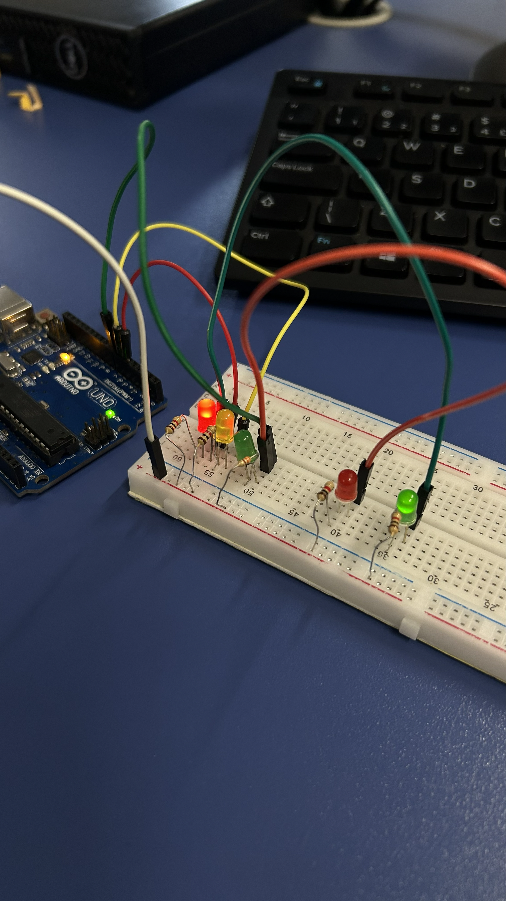
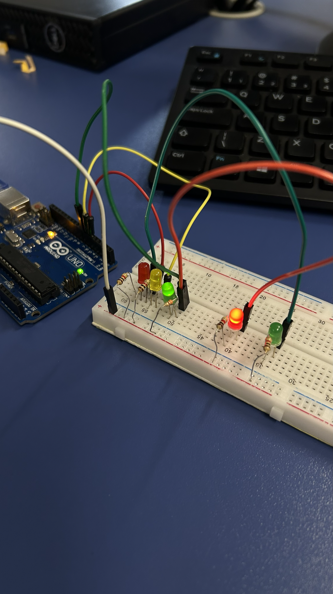

Para realizar essa atividade, começamos montando o protótipo no
Tinkercad, o que nos permitiu visualizar a posição de cada componente e testar o
funcionamento do circuito antes de montá-lo fisicamente. Primeiro, trabalhamos com um
LED, programando-o em C++ para que pudesse ligar, desligar e piscar em determinados
intervalos. Essa etapa foi importante para termos um primeiro contato com a programação
e entendermos, de forma simples, como o código interfere no funcionamento de um
componente.
Depois, evoluímos o projeto para a montagem de um semáforo, utilizando a mesma ideia que
havíamos aprendido com o LED. Novamente, começamos pela prototipagem no Tinkercad e
testamos o circuito junto com a programação em C++. Quando verificamos que tudo estava
funcionando corretamente, partimos para a montagem física, utilizando o Arduino, LEDs e
cabos conectados ao computador pelo USB para enviar o código à placa.
Além do semáforo principal, acrescentamos um semáforo para pedestres, fazendo com que os
sinais funcionassem de maneira relacionada: quando o semáforo principal estivesse
vermelho, o pedestre ficaria com o sinal verde, e quando o principal estivesse liberado,
o sinal do pedestre mudaria.
A experiência foi muito positiva e ajudou bastante no nosso aprendizado. Ter esse
primeiro contato com C++ e com o Arduino foi algo novo e interessante, principalmente
por podermos ver a programação funcionando na prática. Começar com algo simples, como o
LED, e depois transformar esse conhecimento em um projeto mais completo, como o
semáforo, também facilitou bastante a compreensão de como a programação pode ser
aplicada em diferentes situações.
H01: Reconhecer especificações técnicas e paradigmas de IoT.
H02: Integrar dispositivos para coleta automática de dados;
H03: Integrar dispositivos de comunicação de dados.;
H04: Reconhecer especificações de sensoriamento e parametrização;
H05: Integrar projeto orientado a sensoriamento e controle.
Em andamento...